Draw a model
Turn an unfamiliar question into a diagram.
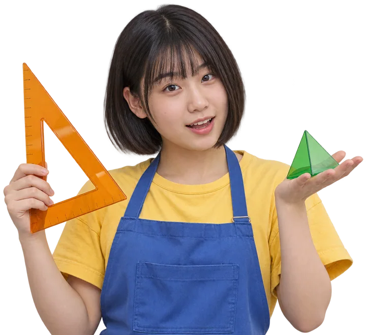
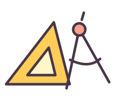
Work through problems with a tutor, one step at a time.
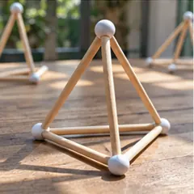
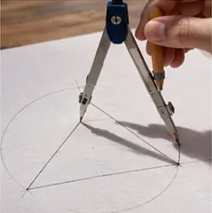
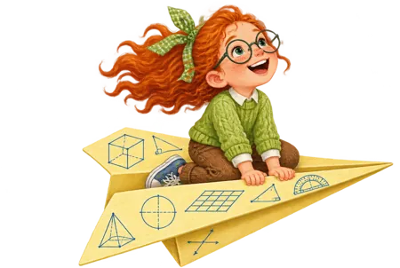
Turn an unfamiliar question into a diagram.

Explain what you think will happen and why.

Choose units and record observations consistently.
Use an estimate or a second method to test your answer.
Choose an activity to bring to your next session.
Choose a goal to see the activities you can work through with your tutor.
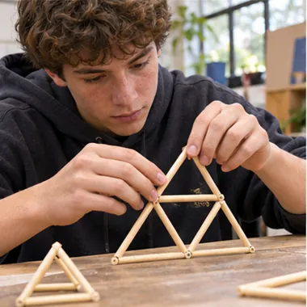
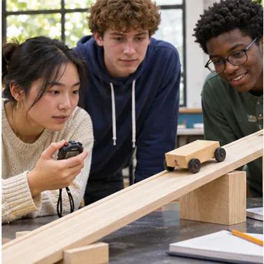
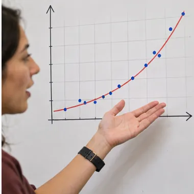
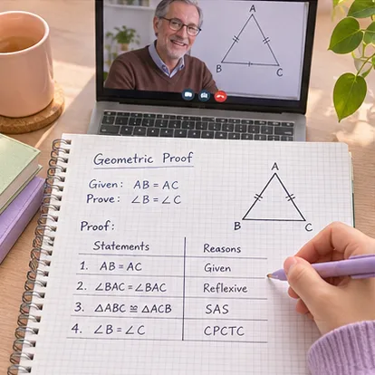
Follow your own reasoning from diagram to answer.
Connect plotted points to the measurements behind them.
Record a prediction and a way to test it.
Sketch a model before choosing a method.
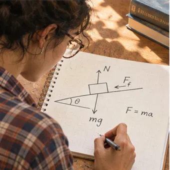
Draw the questionExplain what you expect to observe.
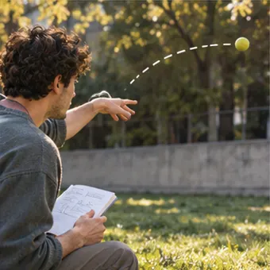
Predict firstRecord measurements with their units.
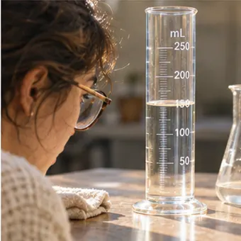
Keep evidenceTest the answer against a second approach.
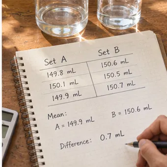
Check the result$25USD · 30 minBring one sticking point and practise a way through it.
Request this session$40USD · 50 minSpend the lesson using a skill with feedback as you go.
Request this session$55USD · 60 minBring a draft, presentation or solution for a detailed review.
Request this sessionTell us the topic and the step that feels difficult so we can match the session to your schoolwork.
Ask about STEM lessonsTell us your school level, the topic and one example of a problem you are working on. Mention any particular method your class uses.
Yes. Bring the original question and your working. Your tutor can help you identify the first uncertain step and check a revised solution.
Many sessions use diagrams, observations or a small data set. Ask about materials in advance if you want to explore a hands-on activity.
Bring a graph from class or ask for an example. Practise identifying variables, interpreting the scale and explaining a trend in words.
Include the test date, syllabus and topics you want to revise. Tutor availability and the scope of the session are confirmed before booking.
Bring your question, your working and the step where you got stuck.